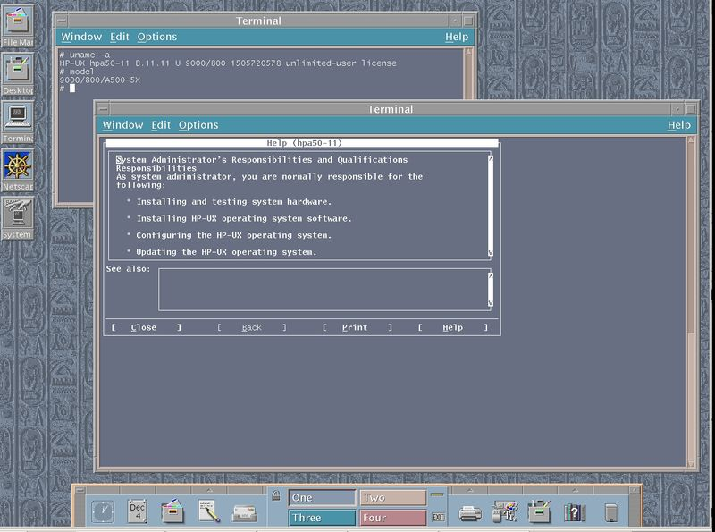

Argo fue parte de un proyecto para hacer que Internet sea accesible a los académicos de Humanidades de la Universidad de Groningen. El navegador web Argo fue creado en agosto de 1994 por Bert Bos.
Actualmente no hay una versión compilada disponible públicamente, aunque el código fuente todavía existe.
| Protocolos | FTP | Gopher | HTTP | NNTP | WAIS | archivos locales |
|---|---|---|---|---|---|---|
| Formatos de datos | ASCII | GIF | HTML | JPEG | XBM | XPM |
Este navegador corría en entornos Unix, más en concreto, fue utilizado bajo HP-UX en la Universidad de Groningen, como mencioné antes.
Aquí dejo algunas definiciones de conceptos anteriormente introducidos: